Integrating FOSS into GIScience Curriculum & Research
Helena Mitasova, Vaclav Petras, Anna Petrasova, Brendan Harmon, Ross K. Meentemeyer
NCSU
OSGeoREL
at the
Center for Geospatial Analytics
North Carolina State University
November 11, 2015
UCGIS Webinar
slides available at geospatial.ncsu.edu/osgeorel
What is FOSS?
Free and Open Source Software
- Software that is free to run, study, modify and distribute
- Free means freedom: free is a matter of liberty not price
- It can be commercial but not proprietary
FOSS is everywhere
Microsoft loves Linux
Apple uses software created by the Open Source community and returns its enhancements to the community. —Apple Inc., 2015
Google, Amazon, Facebook, IBM, Red Hat... all use and contribute to FOSS and the community
FOSS is essential in science
Software [...] developed as part of novel methods is as important for the method's implementation [...] Such software [...] must be made available to readers upon publication.
Social software, Nature Methods 4, 189, 2007
Note: making software available to readers does not make it FOSS
Geospatial FOSS
OSGeo foundation supports the development of FOSS4G and promotes its widespread use. Example projects:
- Web Mapping and Desktop Applications
- GeoServer, MapServer, OpenLayers, GRASS GIS, QGIS,
- Geospatial Libraries and Databases, Metadata Catalogs
- GDAL, GEOS, GeoTools, PostGIS, GeoNetwork, pycsw
Non-OSGeo projects with geospatial capabilities: R, pySAL
Geospatial FOSS at NCSU
NCSU OSGeo Research and Education Laboratory:
https://geospatial.ncsu.edu/osgeorel
- course development using Geospatial FOSS
- research projects
- active participation in OSGeo projects

Course development
Software and GIS education problem
- students are becoming software users instead of scientists
- students confuse software implementation issues with fundamental concepts
- bonding with single software limits flexibility and broader knowledge of the field
Beyond teaching GIS software
- Lectures: software-independent, focus on theory, concepts
- Assignments:
- hands-on practice related to lecture topic
- students use two different software packages solving similar tasks in both
- opportunity to see what is a general concept and what is specific to a particular software
- Independent project: focus is on research question, students chose software/tools/data
Geospatial Analysis and Modeling course
- offered since 2008 as on-campus and distance course
- every semester 30-50 students
- assignments in both GRASS GIS and ArcGIS
- workflow for each software is provided
- students write papers explaining methods and results
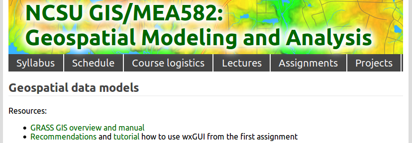

Assignments: Erosion Modeling
Sample lines from instructions and results for GRASS GIS and ArcGIS
r.mapcalc "sedflow = 270. * Kfac * Cfac * flowacc * sin(slope)"
r.divergence magn=sedflow dir=aspect out=erosion_deposition
Build an expression for sflowtopo:
"flowacc" * Sin("slope" * math.pi/180.0)
output raster = sflowtopo
 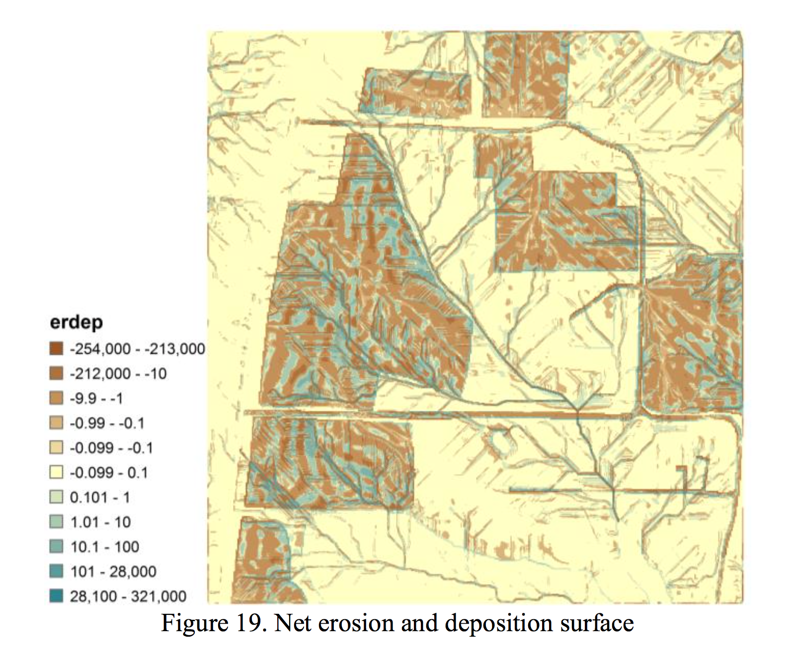
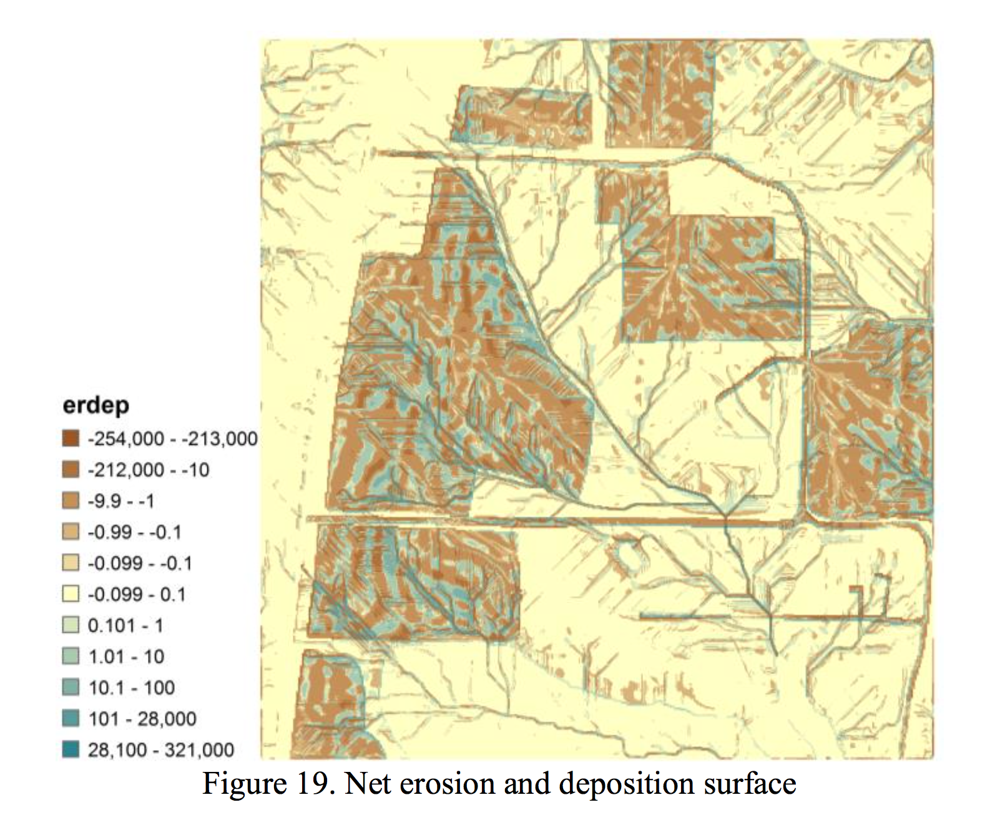
Lilliana Velasquez Montoya, Spring 2014
Midterm exam
Simple workflows for given problems in GRASS GIS or ArcGIS: example least cost path solutions in GRASS and ArcGIS
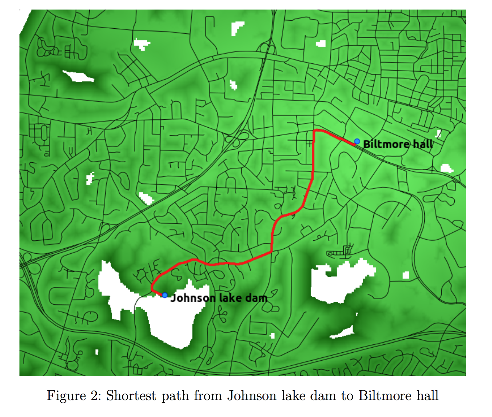
Vaclav Petras and Laura Belica
Independent Project
Focused on student's research interests, any geospatial software can be used
only condition: surface or continuous field component must be included
 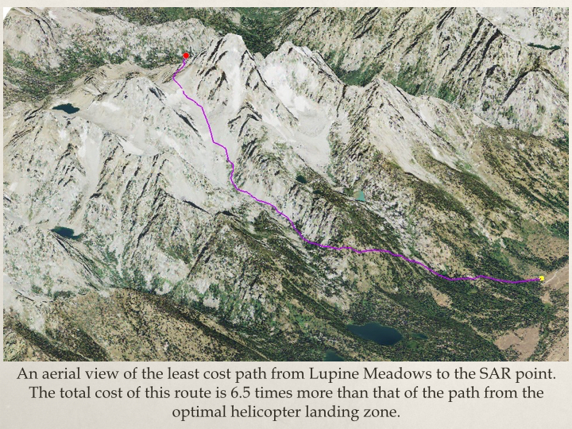
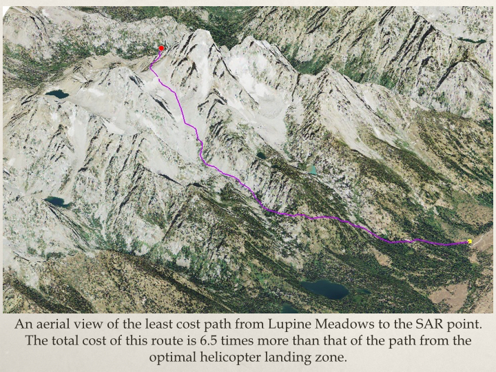
Anna Petrasova and Molly Foley
GIS for Designers
GIS as an integral part of the creative design process- software in class:
- ArcGIS and Rhino (proprietary)
- GRASS GIS and Tangible Landscape (open source)
- projects: combination of GIS and design tools
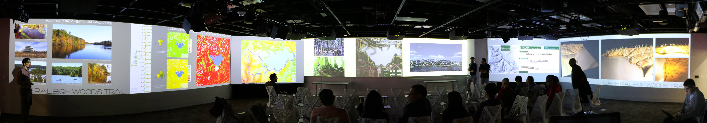
UAV/lidar Data Analytics
- Trimble flight planning software and GRASS GIS
- Agisoft PhotoScan and experimentally OpenDroneMap
- GRASS GIS, Python
UAV/lidar Data Analytics
Assignment: Impact of terrain change on water flow, january and june flight with corn fields


Multidimensional Geospatial Modeling
Modeling of landscape dynamics using multitemporal georeferenced data and simulations- software:
- GRASS GIS, often with new features such as Temporal Framework
- + whatever the students need, e.g. XBeach, libLAS, ArcGIS
- new technologies: Tangible Landscape, NCSU Hunt Lib Teaching and Vis Lab, eye tracking
Multidimensional Geospatial Modeling
Modeling of landscape dynamics using multitemporal data and simulations
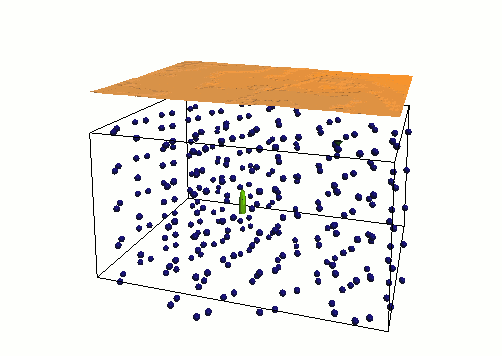

Example assignments on subsurface soil moisture and solar radiation
Course material on-line
- Freely and openly available online
geospatial.ncsu.edu/osgeorel - Managed in Git (GitHub hosted) for revision control, collaboration and sharing
- Format: HTML/HTML5,
- License: CC BY-SA
- registered in OSGeo Educational Content Inventory
www.osgeo.org/educational_content
NCSU MGIST program is undergoing update and re-design
Keeping assignments up-to-date
Most of the assignment instructions provided as text (easy to update), students generate the images.- GRASS GIS workflows provided as commands.
- GUI dialog filled according to the command.
- Commands can be automatically extracted and tested.
- Text also for running ArcGIS part through GUI, but the names in dialogs are not part of the API, so they change.
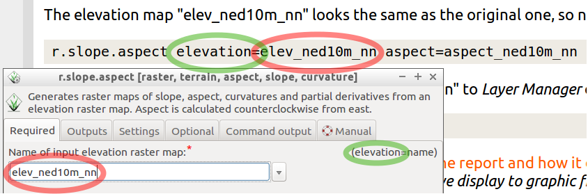
Experimental tutorial design
Interacting with software in multiple ways: tutorial with tabs showing the task run through GUI, CLI or python

Example: GRASS as temporal GIS workshop ncsu-geoforall-lab.github.io/grass-temporal-workshop/
Standardized sample datasets
Initiative to make the course material location specific through data sets with standardized names of layersg.region raster=elevation
r.relief input=elevation output=shade
d.shade shade=shade color=elevation
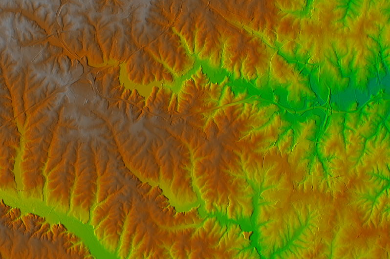 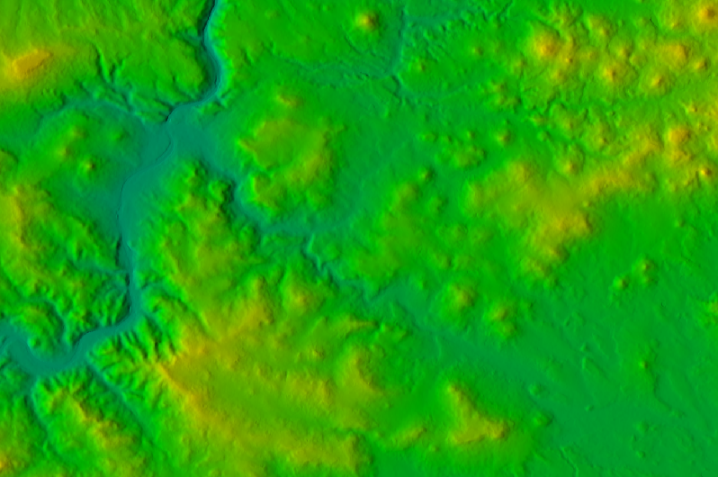 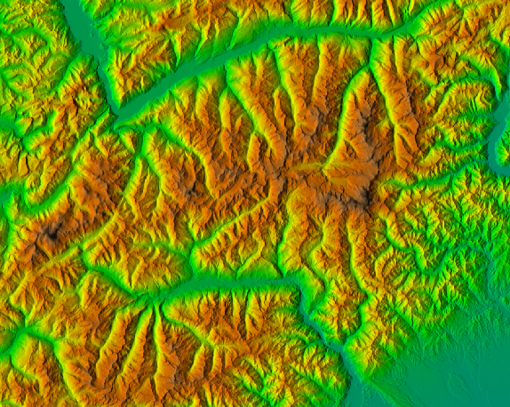
Result for North Carolina, Czech Republic and Piemonte (Italy)
See wiki page, and create data set for your region.
Research
- research with FOSS4G:
- using FOSS4G as a tool
- developing FOSS4G by implementing new methods
- FOSS4G development: join open community of developers and users
Our research: Tangible Landscape, Modeling and simulations of dynamic landscapes, Ultrahigh resolution monitoring and analysis, Sustainable land management
Tangible Landscape
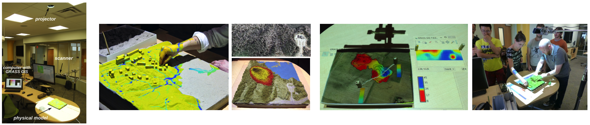
Book: Petrasova, A., Harmon, B., Petras, V., Mitasova, H. Tangible Modeling with Open Source GIS, Springer International Publishing, to appear in December 2015.
Tangible Landscape
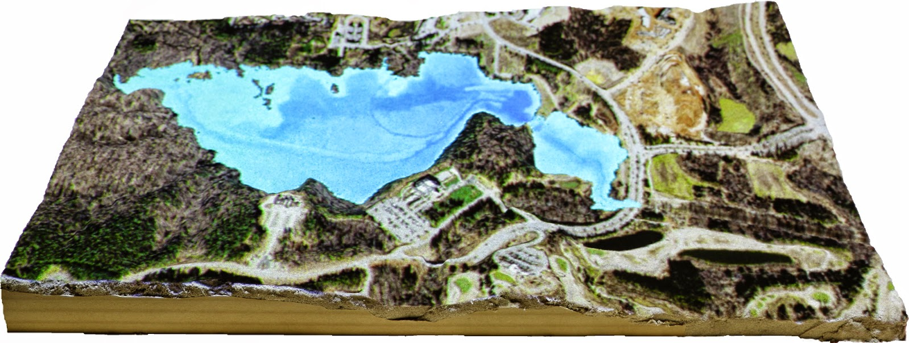 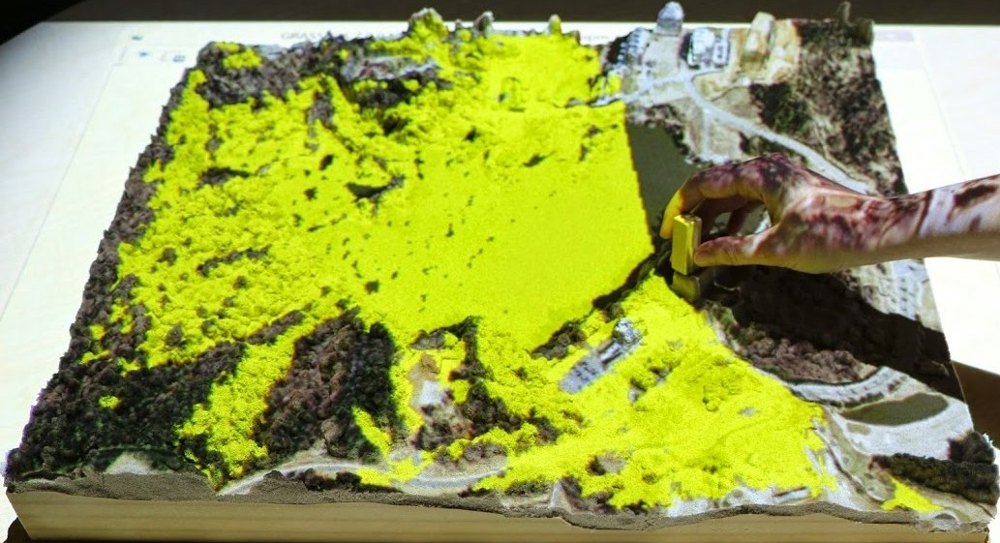 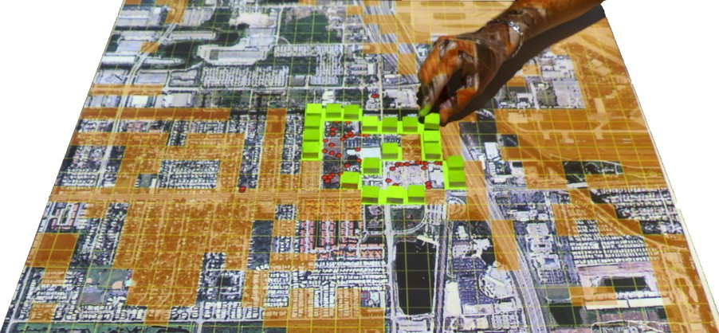Tangible Landscape
see more videos at NCSU OSGeo REL YouTube channel
Student opportunities
- Code or community sprints:
- developers and users working together at one place on software development, documentation, data
- self organized open participation, supported by OSGeo
Examples: OSGeo Vienna 2014, QGIS Copenhagen 2015, GRASS GIS Como 2015
- Google Summer of Code

Tools for open science course
- Course dedicated to
- exploring important role of FOSS in science
- overview of tools and methods common in FOSS and needed in science
- open access, open data, open standards, open...
- reusability and reproducibility are standard in FOSS
Geo for All
- Making geospatial education & solution accessible to all
- establishing research and teaching opportunities
- building global open access teaching infrastructure
- worldwide labs network, students and faculty exchange
- based on MOU between OSGeo and ICA, ISPRS
- join at: www.geoforall.org/how_to_join
Summary
- What can we do:
- improve students' geospatial skills by teaching diverse software packages
- join the open source software community as user or developer
- share teaching materials through OSGeo Educational Content Inventory
- join geo4all - send email to hmitaso@ncsu.edu and describe your FOSS4G activities (link to your website is enough)
Read more in: Petras V., Petrasova A., Harmon B., Meentemeyer R.K., Mitasova, H., 2015, Integrating Free and Open Source Solutions into Geospatial Science Education. ISPRS International Journal of Geo-Information. 2015. Open Access, doi:10.3390/ijgi4020942
Resources: courses and tutorials
- For QGIS
- NCSU OSGeoREL courses
- OSGeo Educational Content Inventory
-
- community resources, hosted by OSGeo Foundation
- Search at: osgeo.org/educational_content
- Register your course materials to share with others
Resources: workshops developed at NCSU
- Introduction to GRASS GIS, delivered at NCSU
- Spatio-temporal data handling and visualization in GRASS GIS, FOSS4G 2014 (Portland), also delivered at NCSU
- Soil erosion and deposition modeling, tutorial, part of broader project, workflows for GRASS GIS and ArcGIS
- How to write a Python GRASS GIS 7 addon, FOSS4G Europe 2015 (Como), also delivered at NCSU
- Urban growth and open source GIS, planned for US-IALE Asheville 2016
Resources: software and platforms
Resources: IPython Notebook
- IPython Notebook
- Used in workshop How to write a Python GRASS GIS 7 addon.
- Jupyter (works for Python, R, C++, ...)
- JupyterHub, tmpnb, nbgrader (management, grading)
- future format for delivering interactive and reproducible scientific papers?
Future of education programs at NCSU
Eric Money, Associate Director of Professional Education